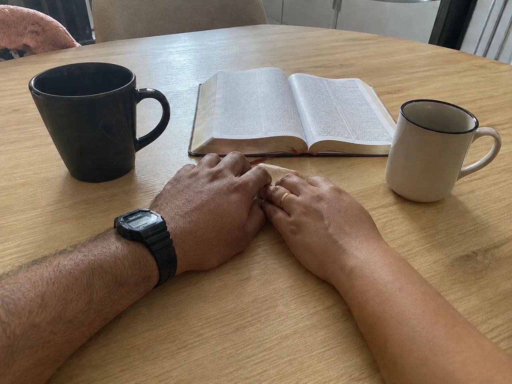

Cântico dos Cânticos
Um livro inteiro que mostra afeto, desejo, beleza, corpo, admiração e prazer dentro de uma relação de aliança.
Guia para casais cristãos
Um guia com 51 perguntas íntimas que muitos casais cristãos têm vergonha de fazer, respondidas com respeito e clareza bíblica.
Muitos casais cristãos se amam, querem honrar a Deus e desejam construir um casamento saudável.
Mas quando o assunto é intimidade, desejo, culpa, limites e comunicação, algumas perguntas parecem difíceis demais de fazer em voz alta.
O problema é que o silêncio não elimina as dúvidas. Ele pode gerar vergonha, distância, insegurança e respostas buscadas em lugares errados.
A boa notícia
Um livro inteiro que mostra afeto, desejo, beleza, corpo, admiração e prazer dentro de uma relação de aliança.
Um texto que mostra que o casamento envolve entrega, cuidado mútuo e responsabilidade sobre o corpo um do outro.
Um lembrete de que o leito conjugal deve ser honrado, não tratado com vulgaridade, culpa ou desprezo.
Isso significa que muitas dúvidas que casais carregam em silêncio talvez não precisem continuar escondidas.
Quando marido e esposa não conversam sobre intimidade, o silêncio e a dúvida começam a ocupar espaço.
E quando uma dúvida fica guardada por muito tempo, ela começa a pesar.
Foi por isso que este material nasceu: para ajudar casais cristãos a colocarem luz em perguntas que ficaram tempo demais no silêncio.

Um material direto para casais cristãos que querem entender melhor temas sobre intimidade, desejo, limites, culpa, comunicação e vida conjugal.
Sem linguagem vulgar. Sem respostas rasas.
A proposta é simples: ajudar você a conversar sobre o que muitos casais pensam, mas quase nunca têm coragem de perguntar.
R$ 37,90
R$ 9,90
Pagamento único
Se você ler o material e sentir que não foi o que esperava, é só mandar um email e devolvemos 100% do seu dinheiro. Sem perguntas, sem burocracia.